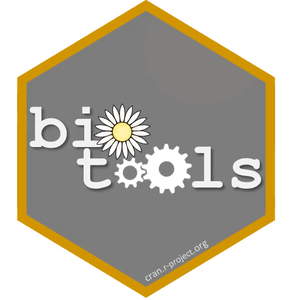

The package biotools has been developed for helping biologists, ecologists and researchers of related fields to perform optimization cluster analysis, specifically using Tocher’s methods, as well as to evaluate the quality of the clustering. For this last purpose, some new and standard methodologies are supplied: the cophenetic correlation coefficient, Box’s M-test for equality of covariance matrices and discriminant analysis based on Mahalanobis distance. These two latter can also be used upon clustering obtained with other methods, including the hierarchical ones.
Users can also find some other useful tools, such as a function for performing the well known Mantel’s test and for computing its simulated power, a function that allows one to perform path analysis dealing with collinearity and a function for determining the minimum sample size in a very general way.
You can install the released version on CRAN directly from the R console, with:
install.packages("biotools")Or you can install the development version from GitHub, using:
devtools::install_github("arsilva87/biotools")Afterwards, just load it and it will be ready to use.
library("biotools")Check the “Articles” menu to see illustrations of some of its functions. In the “Reference” menu you can find the complete documentation and examples of all functions and data sets.
Contact
biotools is an ongoing project. Contributions are very welcome. If you have a question or have found a bug, please open an or reach out directly by e-mail: anderson.silva@ifgoiano.edu.br.